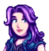
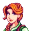
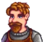
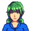
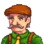
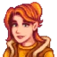
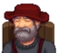

Жители — неигровые персонажи, живущие в городе Пеликан. Некоторые из них ведут свой бизнес, предоставляя игроку возможность купить необходимое для фермерства и существования, а также являются возможными романтическими партнерами для игрока, открывая возможность для брака.
Кандидаты в супруги
Алекс - житель города Пеликан, живущий со своими бабушкой Эвелин и дедушкой Джорджем. Его мать Клара умерла 12 лет назад, оставив сына на попечение своим родителям. Алекс любит заниматься спортом и часто тренируется. Он мечтает однажды стать профессиональным гридболистом из долины Стардью и занять место в команде Зузу Сити Таннелерс.
Себастиан — житель города Пеликан, живёт в Столярной мастерской вместе с матерью Робин, отчимом Деметриусом и единоутробной сестрой Мару. Он - одиночка, живущий в подвале у родителей, и обычно немного неприветлив с теми, кого плохо знает. Себастиан считает, что к Мару относятся гораздо лучше, чем к нему. Он работает программистом-фрилансером и уверен, что никто не принимает его работу всерьёз.
Сэм - житель города Пеликан. Он живёт в доме вместе с матерью Джоди и братом Винсентом (а со второго года - отцом Кентом).Обычно играет на гитаре в своей комнате или в билльярд в игровой комнате салуна со своими друзьями Себастианом и Абигейл. Он также работает неполный рабочий день в ДжоджаМарт уборщиком (или в Музее, если вы отстроите городской Клуб и ДжоджаМарт в итоге закроется).
Харви - врач города Пеликан. Он немного староват для холостяка, но у него доброе сердце и уважаемое положение в обществе. Живет в маленькой квартире над медицинской клиникой и проводит большую часть своего времени за работой.У него есть тайное хобби - он очень любит самолёты и интересуется небом, но при этом сильно боится высоты.
Шейн - один из жителей города Пеликан, живущий на ранчо вместе со своей тётей Марни и крестницей Джас. Он работает в ДжоджаМарте с понедельника по пятницу, расставляя там товары по полкам. Несмотря на то что его семья любит его, а тётя даже бесплатно содержит, Шейн очень несчастен и не ожидает от своего будущего ничего хорошего. Порой он очень груб и невежлив и часто пытается залить своё горе в алкоголе, иногда напиваясь до беспамятства.
Эллиот живет один в домике на пляже на юге города Пеликан. Эллиот - сентиментальный романтик. Он писатель, который мечтает в один прекрасный день написать великолепный роман. Когда может себе позволить, наслаждается крепким напитком в салуне.

Абигейл живёт вместе с родителями в их Магазине. Иногда она ругается с матерью, так как та волнуется из-за её "альтернативного" образа жизни. Вы можете найти Абигейл гуляющей в одиночку по кладбищу или наблюдающей за лягушками в ливень.

Лея - жительница города Пеликан, которая живёт в маленьком домике у реки вне границ города. Она талантливый художник и у неё богатое портфолио работ, но пока она боится показать их публике.
Мару — дочь плотника и учёного, поэтому ещё в юном возрасте начала увлекаться созданием всяких штуковин. Живёт в Столярной мастерской города Пеликан вместе с матерью Робин, отцом Деметриусом и единоутробным братом Себастианом.
Пенни живёт со своей мамой, Пэм, в маленьком трейлере на берегу реки и её смущает быть членом единственной семьи в городе, живущей в трейлере. Она занимается с Винсентом и Джас в Музее. Это не всегда легко, но ей нравится это делать
Хэйли - жительница города Пеликан, живущая вместе со своей сестрой Эмили в доме рядом с городской площадью.Будучи богатой и популярной в школе, Хэйли стала немного тщеславной и эгоцентричной, хотя под этой конфетной оберткой скрывается весёлая, открытая девушка
Эмили - жительница города Пеликан. Она вместе с сестрой Хэйли живет в доме около городской площади. Судя по письму на кухне, их родители часто путешествуют
Жители, с которыми возможна дружба
Вилли - житель города Пеликан, который вырос путешествуя среди островов Папоротника, и живущий сейчас на юге города в домике на Пляже. Он появляется в городе на второй день после того, как вы прибываете на ферму и сообщает об этом в письме. Вилли продаёт рыболовные товары в его магазине, который открыт почти каждый день.
Винсент - один из жителей города Пеликана. Он очень юн, и его можно часто найти играющим с Джас. Он восхищается своим братом и хочет вырасти таким же.
Волшебник - житель города Пеликан, обитающий в своей собственной башне на западе Леса. В письмах он представляется как "М. Расмодиус, волшебник". Он нелюдим и выходит из своей башни только на городские праздники. В первый раз вы познакомитесь с ним после первого посещения Клуба.
Гас - сельский житель, который живет и работает в собственном Салуне в Городе Пеликан.
Дварф - житель Города Пеликан, обитающий в шахтах, представитель расы дварфов. Когда-то они были очень могущественны, но сейчас от них остались только артефакты. Кробус говорит о тысячелетней войне между дварфами и народом теней, а Дварф иногда с опаской спрашивает, не вражеский ли вы шпион. Изначально герой не понимает языка Дварфа. Для того, чтобы это исправить, необходимо найти 4 свитка Дварфов в Шахтах и пожертвовать их в Музей Гюнтеру. В последствии Дварф будет продавать уникальные предметы.
Деметриус - житель города Пеликан, который живет вместе с женой Робин, дочерью Мару и пасынком Себастианом в Столярной мастерской. Он типичный ученый, постоянно занимается новыми исследованиями и изучает город и его окрестности. Деметриус крайне увлечен своим делом, каждая просьба о помощи от него связана с какими-то научными изысканиями.
Джас - одна из жителей Города Пеликан. Она ещё ребенок, как и её лучший друг Винсент, вместе с которым Джас проводит много времени.
Джоди< - жительница Города Пеликан. Она живет вместе с мужем Кентом (на момент вашего прибытия он находится в армии и вернётся Весной второго года) и двумя сыновьями, Сэмом и Винсентом.
Джордж Маллнер - старожил города Пеликан, живущий в доме вместе со своей женой Эвелин и внуком Алексом недалеко от магазина Пьера. Он очень стар, ворчлив и груб, но, тем не менее, отходчив. Раньше он работал углекопом, но в результате несчастного случая получил травму, из-за которой оказался в инвалидной коляске.
Кент - житель города Пеликан, муж Джоди и отец Сэма и Винсента. Он служил в армии в течение первого года и возвращается домой весной второго года из Готоро.

Клинт - кузнец, проживающий и работающий в городе Пеликан в собственной кузнице, расположенной на юго-востоке от центра города. Продает руду, улучшает инструменты, а также раскалывает жеоды по цене 25 за шт.
Кробус - единственный дружественно настроенный к вам монстр в игре. Живёт в канализации и продаёт различные предметы. При первом разговоре с ним удивится тому, что кто-то зашёл в канализацию.

Кэролайн - жительница города Пеликан, домохозяйка. Живёт в магазине вместе с мужем Пьером и дочерью Абигейл.
Лео - мальчик, который живет в хижине на Имбирном острове. Его родители погибли в море, и он считает попугаев, населяющих остров, своей семьей. Поначалу он слишком стесняется разговаривать с игроком, пока тот не "подружится" с попугаями острова. У игрока должно быть при себе 10 золотых грецких орехов чтобы подружиться с Лео.
Линус - безработный, который обитает в палатке на севере города Пеликан, рядом со Столярной мастерской. Линус сторонится людей, опасается незнакомцев и старается быть как можно более незаметным. За всеми праздниками он предпочитает наблюдать издалека. Ест то, что соберет в лесу или выловит в реке, не брезгует ночью пошарить по мусоркам города. Свой нынешний образ жизни Линус выбрал по своей воле и доволен своим выбором. Ему нравится познавать природу и самого себя вдали от цивилизации, проводить время в размышлениях и много читать. Линус признается, что выбрал Долину Стардью своим местом жительства из-за отличной библиотеки.

Льюис - мэр Города Пеликан. Вместе с Робин он приветствует игрока, когда тот приезжает в долину, и рассказывает про жизнь на ферме.
Марни - жительница города Пеликан, которая живет к западу от Города Пеликан на своём Ранчо Марни вместе со своими племянниками Джас и Шейном. Она занимается аэробикой вместе с Кэролайн, Джоди, Эмили и Робин по вторникам в магазине Пьера. Марни очень любит разводить и заботиться о животных.
Пэм - одна из жителей города Пеликан, живущая в трейлере у реки. Она была водителем автобуса, пока тот не сломался.
Пьер - один из жителей города Пеликан. Он женат на Кэролайн у них есть дочь Абигейл. Пьер имеет собственный магазин, в котором и работает; он терпит убытки от того, что Корпорация Джоджа открыла недалеко ДжоджаМарт. На кухне его дома можно найти письмо, в котором Моррис предлагает ему устроиться в ДжоджаМарт на низкую должность с мизерной зарплатой.

Робин - жительница города Пеликан, которая вместе с мужем Деметриусом, дочерью Мару и сыном Себастианом живёт в доме с оборудованной столярной мастерской. Робин, собственно, и является городским плотником.
Сэнди - одна из жителей долины Стардью, живущая в магазине под названием "Оазис" в Пустыне Калико. Сэнди с городом Пеликан связывал только автобусный маршрут, и, когда автобус поломался, в её магазине совсем не стало клиентов и продажи упали. Поэтому она очень обрадуется вам, когда вы отремонтируете автобус и посетите её. Сэнди сдаёт помещение над своим магазином Мистеру Ки, который держит там казино. Кроме того, Сэнди дружит с Эмили и иногда вспоминает её.
Эвелин - приятная и добродушная старушка, которая живёт в городе Пеликан с самого детства, любит готовить. Живёт со своим мужем Джорджем и внуком Алексом рядом с магазином Пьера.
Остальные жители
Пташка — это старушка, живущая в западной части Имбирного острова. Она вдова капитана пиратского корабля, остов которого можно найти на южном берегу. Когда муж Пташки пропал, она три года ходила по морям в поисках его останков, пока не нашла их на Имбирном острове, и с тех пор живет здесь, охраняя его кости.
Маролон - житель северо-восточной части города Пеликан, глава Гильдии искателей приключений, и всегда находится в ней за прилавком. Он покупает вещи, которые упали с монстров в шахтах.
Приспешик охраняет Хижину ведьмы внутри болота. Вы встретитесь с ним в болоте, но не сможете обойти его. В одной из книг в библиотеке сказано, что гоблины любят Майонез Пустоты. После того как вы дадите ему майонез, он отодвинется в сторону, тем самым позволяя игроку пройти в Хижину ведьмы

Гил - житель города Пеликан, член Гильдии искателей приключений, которая находится на востоке от Шахт. Он награждает игроков при выполнении заданий по истреблению чудовищ. Гильдия искателей приключений открыта с 14.00 до 22.00, и всё это время Гил сидит в своём кресле у камина рядом с Марлоном, который находится тут же рядом, за прилавком. Завести отношения или достичь определенного уровня дружбы с Гилом нельзя, как и дарить подарки.
Вышибала охраняет вход в казино в Оазисе, не пропуская вас, пока вы не выполните задание «Таинственный Ки». Если попытаться пройти мимо него, то вас телепортирует обратно, а вышибала скажет: "Хорошая попытка." Сэнди побаивается его и говорит, что он "даже не шевелится".
Моррис - менеджер и представитель отдела обслуживания клиентов корпорации Джоджа, в которой ранее работали вы сами. Найти его можно в ДжоджаМарте в рабочее время магазина. При первом знакомстве Моррис будет предлагать купить членство в корпорации за Gold.png 5000. Если вы его приобретёте, то Клуб превратят в склад Джоджа, обитающие в нём Джунимо исчезнут, а улучшения города и окрестностей можно будет приобрести только за деньги.
Дедушка - первый персонаж, с которым вы знакомитесь после создания персонажа. Вы читаете письмо, которое получили от дедушки и узнаёте, что он завещал нам ферму, находящуюся в Долине Стардью, в которую вы и переедете в последствии.
Мистер Ки - таинственный незнакомец, дающий вам задания, после того, как вы вставите аккумулятор в камеру хранения, находящуюся в туннеле (западнее автобуса).
Губернатор - является губернатором долины Стардью, в котором находится город Пеликан, появляется только на фестивале Луау.
Гюнтер - житель города Пеликан, управляющий Музеем и библиотекой долины Стардью.
Профессор Снэйл — житель Имбирного острова. Он собирает и продает древние кости. Место его работы Полевой офис, который он никогда не покидает